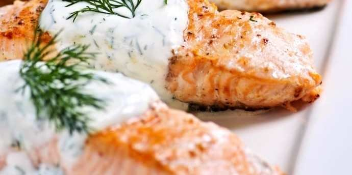

Norwegian Salmon with Dill Sauce

Description
This Christmas, treat your guests to succulent, melt in the mouth Norwegian Salmon with dill sauce.
Ingredients
- 4 Norwegian salmon fillet
- 160 g yogurt, plain
- 1 clove garlic
- 2 tbsp lemon juice
- 1 handful of dill, fresh
- black pepper
- sea salt
Steps
- Preheat the oven to 220 celsius. Lightly oil a roasting dish or line a heavy baking sheet with foil, and
then add the salmon and season with the tablespoon of lemon juice, pinch of sea salt, and freshly ground black pepper.
- Roast the Norwegian salmon in the oven until it's cooked through in the middle. Meanwhile make the sauce
by whisking together the yoghurt, 2 teaspoons of lemon juice, dill and garlic. Drizzle over the salmon and garnish.